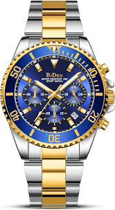
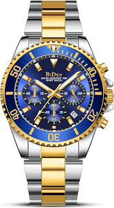

Reseña Historica
Sparkle Studio es una empresa dedicada a la creación de diseños personalizados en joyería y accesorios. Ofrecen una amplia gama de colecciones, incluyendo sus más vendidos, nuevos lanzamientos, colecciones temáticas como Halloween y Everyday Moments. Cada producto es elaborado bajo pedido, con un tiempo de entrega estimado de 3 a 4 semanas. Además, brindan un servicio postventa excepcional, garantizando la satisfacción del cliente.
Sparkle Studio
Aunque no se dispone de información detallada sobre la historia específica de Sparkle Studio, en El Salvador existen otros emprendimientos joyeros con historias destacadas.
Por ejemplo, Tilo El Salvador surgió de la pasión de Yvette Sol de Mónico por los accesorios, comenzando como una actividad personal que evolucionó hasta convertirse en una marca reconocida por sus diseños exclusivos y de alta calidad
La tradición joyera en Zacatecoluca también es notable, con figuras como Mardonio Baires de Joyería La Mexicana, quien contribuyó al desarrollo del oficio y la formación de nuevas generaciones de joyeros en la región.
En la actualidad, empresas como Sparkle Studio representan la evolución moderna de la joyería, fusionando la tradición con la personalización y la tecnología.
Aunque la historia detrás de Sparkle Studio no está claramente documentada en fuentes tradicionales, este tipo de negocios suelen surgir de la pasión por el diseño y la búsqueda de ofrecer productos exclusivos que no solo sean hermosos, sino que también cuenten con un valor sentimental. Las joyerías contemporáneas, como Sparkle Studio, suelen especializarse en la creación de piezas personalizadas, brindando a los clientes la oportunidad de expresar su individualidad a través de productos únicos.
.jpg) 
